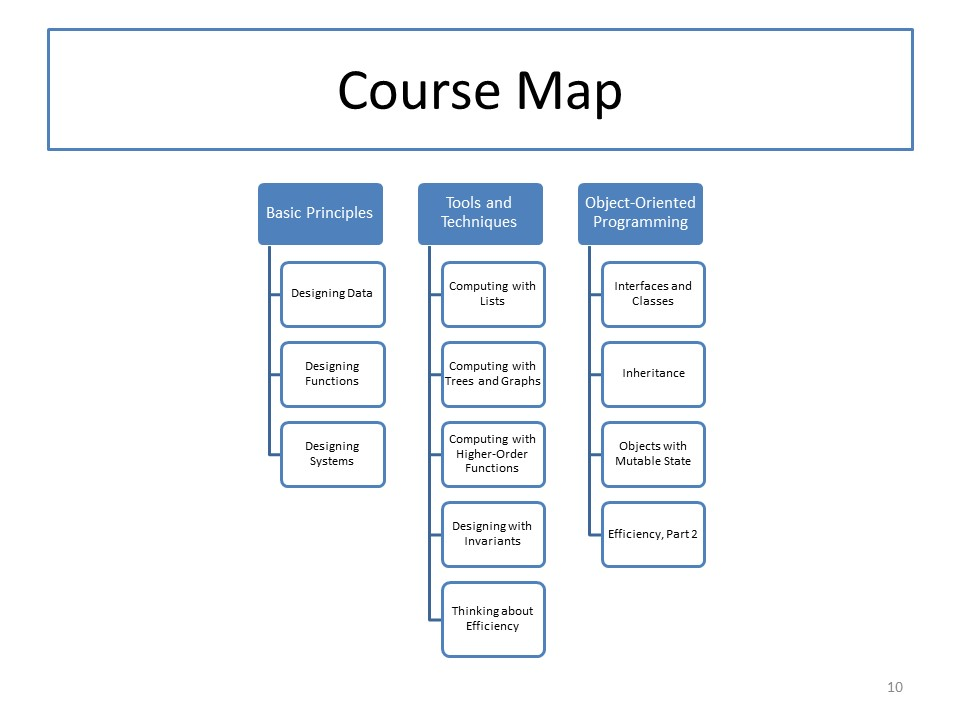

CS 5010 Module 12
Module Overview
Now that you have completed work on your problem sets, this week's module is a special bonus module containing material at each instructor's discretion.
Finally, we summarize the main points of this course and give you a pep talk as you go on to the rest of your Master's program.
Course Map
Supplementary Lessons
The following lessons are from Professor Clinger's Spring 2017 offering of CS 5010.
- Efficiency and Other Myths
- Recursion vs Iteration
- Garbage Collection vs Explicit Deallocation
- Compiler Optimization and Why It Matters
- Brian W Kernighan and Christopher J Van Wyk. Timing trials, or the trials of timing: experiments with scripting and user-interface languages. Software—Practice & Experience, 28(8), 10 July 1998, pages 819-843.
- William D Clinger. Proper tail recursion and space efficiency. Proceedings of the 1998 ACM Conference on Programming Language Design and Implementation. June 1998, pages 174-185.
- William D Clinger, Anne H Hartheimer, and Eric M Ost. Implementation strategies for first-class continuations. Journal of Higher Order and Symbolic Computation, 12(1), 1999, pages 7-45.
- Benjamin Zorn. The measured cost of conservative garbage collection. Software—Practice & Experience, 23(7), July 1993, pages 733-756.
- Mitchell Wand and William D Clinger. Set constraints for destructive array update optimization. Proceedings of the IEEE International Conference on Computer Languages, April 1998, pages 184-193.
Readings
These are readings for the supplementary lessons above.
Lessons and Guided Practices
Problem Set
Go out in the world and do good work!